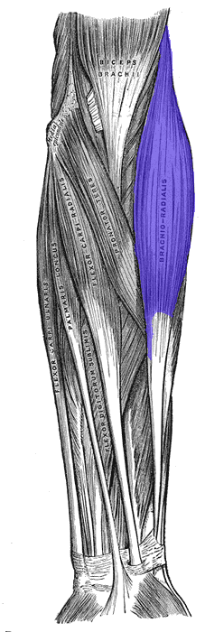
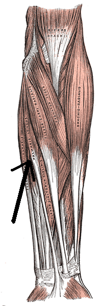
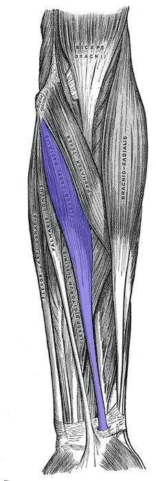
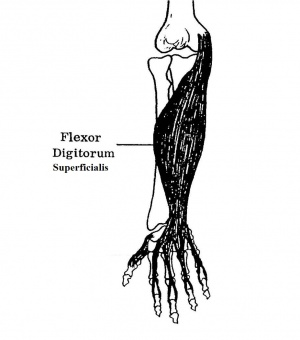
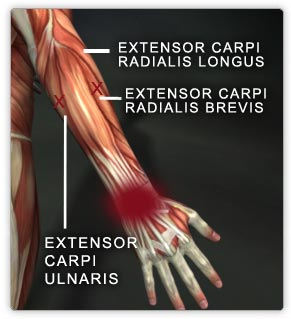
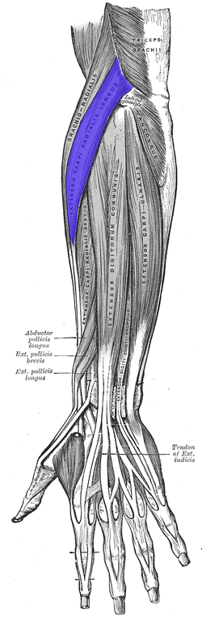
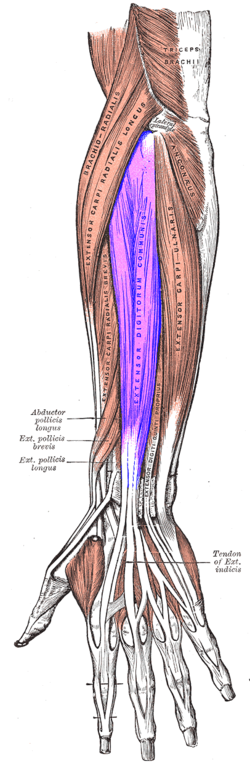
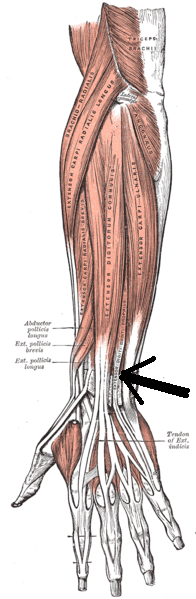
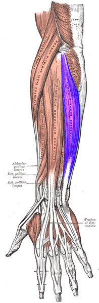

Talk:Anatomy
From Science Olympiad Student Center Event Wiki
There is the separate page for the muscle links, but it seems like it should go on this page. Should someone move the information and links to this page, or just put it in similar to the way that the MPC Index is put in on the Mission Possible page? Thoughts? Haven chuck 03:11, 6 July 2010 (CEST)
It depends on how much info will go on to the separate pages if they start to get info on them I would leave them separate. If they are just pictures add them to the page lets let paleonap explain what he is doing --Robotman09 03:22, 6 July 2010 (CEST)
What I'm trying to do is build a visual quick reference for the muscles. I will eventually put up info with it, probably after I put up every picture. But right now there is nothing, you're right. I just don't think it would work on the main page for the event. Is there any compelling reason to move this?--Paleonaps95
There isn't, but truthfully, it will likely be ignored if it isn't on the main event page. I didn't mean you should move each page, just put a link to the index part, like as follows. Haven chuck 21:39, 6 July 2010 (CEST)
Sample
This is a list of muscles tested on in the Muscular System portion of Anatomy. Also see Anatomy/Muscle List.
Muscle Name | Origin | Insertion | Function | Picture
|
|---|---|---|---|---|
| Brachioradialis | Upper two thirds of lateral supracondylar ridge of humerus and lateral intermuscular septum | Base of styloid process of radius | Flexes arm at elbow and brings forearm into midprone position |  |
| Palmaris longus | Common flexor origin of medial epicondyle of humerus | Flexor retinaculum and palmar aponeurosis | Flexes wrist and tenses palmar aponeurosis |  |
| Flexor carpi radialis | Common flexor origin of medial epicondyle of humerus | Bases of 2nd and 3rd metacarpals via groove in trapezium and slip to scaphoid | Flexes and abducts wrist |  |
| Flexor digitorum superficialis | Humeral head: common flexor origin of medial epicondyle humerus, medial ligament of elbow. Ulnar head: medial border of coronoid process and fibrous arch. Radial head: whole length of anterior oblique line | Tendons split to insert onto sides of middle phalanges of medial four fingers | Flexes proximal interphalangeal joints and secondarily metacarpophalangeal joints and wrist |  |
| Extensor carpi radialis brevis | Common extensor origin on anterior aspect of lateral epicondyle of humerus | Posterior base of 3rd metacarpal | Extends and abducts hand at wrist |  |
| Extensor carpi radialis longus | Lower third of lateral supracondylar ridge of humerus and lateral intermuscular septum | Posterior base of 2nd metacarpal | Extends and abducts hand at wrist |  |
| Extensor digitorum | Common extensor origin on anterior aspect of lateral epicondyle of humerus | External expansion to middle and distal phalanges by four tendons. Tendons 3 and 4 usually fuse and little finger just receives a slip | Extends all joints of fingers |  |
| Extensor digiti minimi | Common extensor origin on anterior aspect of lateral epicondyle of humerus | Extensor expansion of little finger-usually two tendons which are joined by a slip from extensor digitorum at metacarpophalangeal joint | Extends all joints of little finger |  |
| Extensor carpi ulnaris | Common extensor origin on anterior aspect of lateral epicondyle of humerus | Base of 5th metacarpal via groove by ulnar styloid | Extends and adducts hand at wrist |  |
{kind=link}
{kind=link}
{kind=link}
{kind=link}
{kind=link}
{kind=link}
{kind=link}
{kind=link}
{kind=link}
| This page was last modified on 6 July 2010, at 19:39. - This page has been accessed 6,102 times. - Disclaimers - About Science Olympiad Student Center Event Wiki |